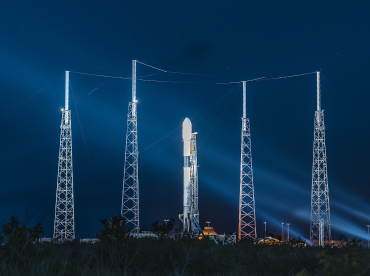

Тра 8, 2024
Falcon запуск запланований на початок травня
Самі ж супутники були розгорнуті на низькій навколоземній орбіті приблизно через 65 хвилин після запуску з космодрому.
.png) Тра 11, 2024
Тра 11, 2024
SpaceX представила скафандр
SpaceX представила скафандр Extravehicular Activity (EVA) Suit, призначений для виходу у відкритий космос. Про це компанія Ілона Маска повідомила на своєму офіційному сайті.
.png) Тра 22, 2024
Тра 22, 2024
SpaceX запустить шатл NASA на супутник Юпітера.
"NASA обрало компанію Space Exploration Technologies Corp. (SpaceX) з Хоторна, Каліфорнія, для надання послуг з запуску першої місії землі для проведення докладних досліджень супутника Юпітера, Європи.